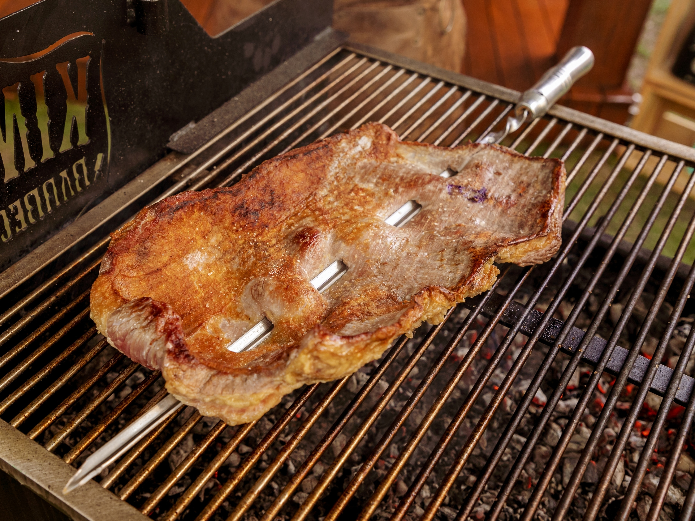
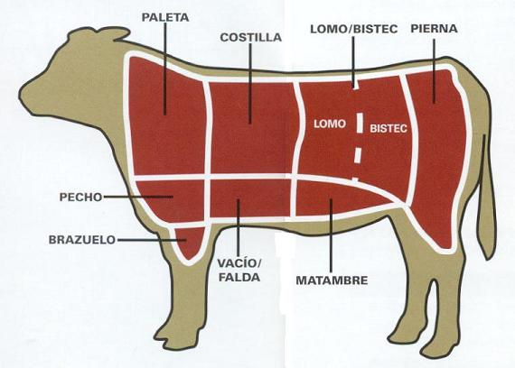
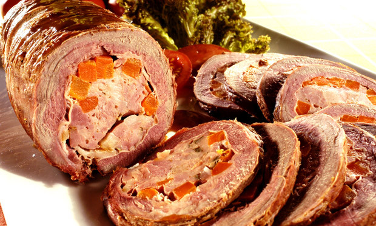
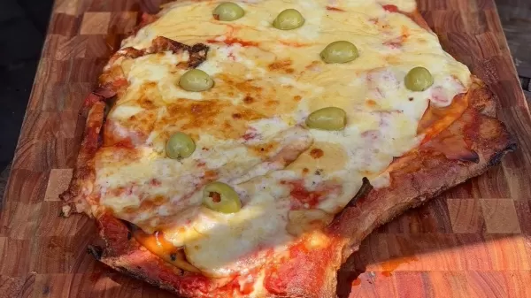

Matambre - Swift
"Publicado em 17/01/2023 - Hoje vamos conferir algumas informações sobre a carne bovina Matambre. Novo corte vendido nas lojas físicas da Swift."
Sobre o corte Matambre:
O matambre é um corte muito tradicional no sul do país, e em países como Uruguai e Argentina. Costuma ser servido no inicio do churrasco como aperitivo, e por ser o primeiro corte da costela a ser servido, daí vem o seu nome: matambre vem de "mata hambre", mata a fome em espanhol.
Esse corte em outras regiões também é conhecido por nomes como: malaya no Chile, nos Estados Unidos os mexicanos o chamam suadero ou sobrebarriga; este último termo é usado também na Colômbia, na Espanha o corte vacum é denominado falda. Matambre é um pedaço de carne que se extrai dentre a pele e a costela do gado bovino.
Maneiras de se preparar:
Mas você deve se estar se perguntando: "Tá mas só consigo fazer essa carne no churrasco?". O matambre bovino é um prato saboroso, e pode ser preparado de várias formas. Uma maneira muito conhecida é o matambre enrolado, preparado típico da Argentina, Paraguay e Uruguay.
Outra forma de se preparar essa carne é o que chamam de "A la pizza", Transformar o matambre em pizza é uma variação popular na Argentina e no Uruguai.... - Veja mais em uol.com
Eai gostou das dicas? Quer saber mais sobre essa carne deliciosa? Bem aqui eu tenho o link de um video bem bacana de como se preparar o matambre enrolado, e que mostra como é realizado o corte. Como assar um matambre recheado por Marcelo Bolinha Carnes.
Onde encontro o matambre?
Esse e varios outros cortes bovinos já estão a venda nas lojas físicas da Swift ou pelo site Swift.com.